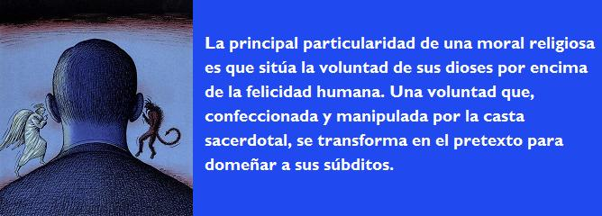
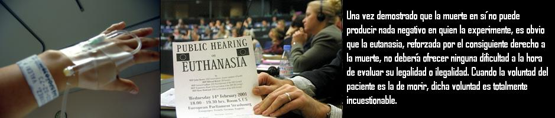

Una vez eliminadas las creencias y haber restituido a la razón el lugar que le corresponde como único pedestal que sustenta el conocimiento, debemos exigir que sea esta misma razón la que ilumine las bases que diriman la moralidad o inmoralidad de los actos, eliminando todos los escrúpulos irracionales que dificulten, tanto los derechos de los seres sintientes como su bienestar. La principal particularidad de una moral religiosa es que sitúa la voluntad de sus dioses por encima de la felicidad humana. Una voluntad que, confeccionada y manipulada por la casta sacerdotal, se transforma en el pretexto para domeñar a sus súbditos. Por lo tanto, es totalmente imprescindible que el bienestar y la felicidad -tanto de los animales como del ser humano- sean el único y principal objetivo de su existencia, haciendo de la razón el sustento de la ética laica. La consecución del bienestar social pasa por respetar los derechos ajenos que constituyen la fuente de la dignidad. Sólo los seres sintientes poseen esa cualidad consistente en el derecho inalienable a no sufrir y que conforma la base de los demás derechos. En consecuencia, el análisis de la moralidad de un acto se realizará en función de las consecuencias negativas, directas o indirectas, que se puedan derivar de tal acto y que se traducen en el posible sufrimiento o conculcación de derechos de los individuos que intervienen en él.
La ciencia moderna nos ha proporcionado los suficientes datos para saber qué seres son capaces, en virtud de su sistema nervioso y neurológico, de padecer sufrimientos tanto físicos como psicológicos, porque estamos en condiciones de afirmar que sólo los seres sintientes son sujetos de derechos quedando excluidos de esta particularidad todos aquellos seres orgánicos -tanto si son de origen animal como si no, y pertenezcan a la especie que sea- que por su incompleto desarrollo o por sus características inherentes a su especie, no hayan desarrollado los sistemas orgánicos que capacitan para sentir dolor o placer. Nunca podrá ser fuente de derechos la pertenencia a una especie por el hecho de sentirse privilegiada respecto de las demás. Los seres humanos deberemos meternos en el mismo saco con todas las demás especies, incluidas todas las etapas de desarrollo desde la concepción hasta el desarrollo completo del individuo.
La importancia de cualquier ser viene determinada por los intereses sentimentales, psicológicos, materiales o sociales que puedan tener el resto de individuos hacia él. El valor, no sólo de un animal sino de cualquier objeto, implica inexorablemente una relación a dos: el que valora, y el que es valorado. Así, por ejemplo, todas las catedrales, las pirámides de Egipto y todo el arte del mundo no tendrían ningún valor sin la existencia de los seres humanos que aprecian dichos objetos. Un hombre, viviendo en solitario en un lugar deshabitado, que no tiene la más mínima relación social con otros seres, tiene la misma importancia que un insecto. El hombre no tiene importancia por sí mismo, sino por el hecho de pertenecer a una especie social y sociable en la que el valor que le puedan otorgar sus semejantes pueda hacer de él un ser imprescindible: la muerte de un ser querido es uno de los sufrimientos más intensos que puede experimentar el ser humano. La importancia de un vagabundo que no tiene familia ni amigos es incomparablemente inferior a la de aquella persona que por sus cualidades psicológicas y virtudes humanas está rodeada de personas que la aprecian y la aman; sin embargo,¡la dignidad es la misma! La importancia de un ser y su dignidad son dos conceptos totalmente diferentes que no tienen ninguna relación entre sí. Mientras que la dignidad hace referencia a ese respeto reverencial que merece cualquier ser sintiente, la importancia de un animal -racional o no- es un valor subjetivo que se confiere desde la parcialidad y relatividad de los intereses particulares del que valora al que es valorado.
El abuso de poder que ha ejercido desde siempre el ser humano sobre el resto de las especies, erigiéndose en el rey de la creación, y que fue acuñado por Richard Ryder con el término de “especieísmo”, no sólo ha conculcado los derechos de los animales sino que -apoyado por creencias religiosas y, por tanto, en contra de la razón- ha convertido un conjunto de células sin ningún sistema de conciencia física ni psicológica, en un ser muy superior a todos los animales irracionales, incluidos aquellos que, a través de experimentos, nos demuestran que son capaces de tener un cierto grado de autoconciencia. Unicamente desde los escrúpulos morales, se puede hacer de un embrión o un feto humano un sujeto de derechos y más importante que cualquier animal irracional.

El tan aclamado -por la Iglesia Católica- argumento del derecho a la vida tanto del embrión como del feto, aparte de no sostenerse en pie, se vuelve en su contra al tener que admitir el hecho incuestionable de que todo derecho implica, necesariamente, el mismo derecho a lo contrario; dicho de otra forma: todo derecho es renunciable. Lo contrario supondría una obligación, por lo que no se podría hablar de derechos. En consecuencia, el derecho a la vida supone, en la misma medida, el derecho a la muerte. Afirmar que la vida pertenece a Dios y sólo él puede quitarla convierte el derecho a la vida en un eufemismo que encubre la obligación de vivir. Pero, la Iglesia Católica es cada vez más reacia a utilizar argumentos religiosos para respetar la libertad de conciencia, viéndose obligada a buscar en el cajón de la lógica argumentos a través de los cuales pueda demostrar la inmoralidad de ciertos actos tanto a creyentes como a no creyentes, utilizando el conocido “contra natura”, el ya analizado derecho a la vida o la dignidad humana cuando se trata de eutanasia.
¿Quién, sino el sujeto de un derecho, puede decidir la ejecución o no de su derecho? Nadie puede decidir por otro -a no ser que se sepa de forma clara su voluntad y que el sujeto de derecho no pueda explicitarla. Si el embrión o el feto tuvieran derecho a la vida deberían ser ellos y no la sociedad quienes decidieran. Pero, ni el embrión ni el feto pueden tener derecho a la vida. En todo caso, el feto que haya desarrollado lo suficiente el sistema nervioso central como para poder sentir, tendrá el mismo derecho y dignidad que el resto de animales sintientes. Es evidente que a la luz de la razón no hay nada que justifique el derecho a la vida de un feto humano y no pueda justificarlo, igualmente, del resto de animales. ¿Cómo surge, entonces, el derecho a la vida? Todo derecho surge de un deseo -explícito o implícito- por o de algo. Mas, no todos los deseos producen derechos. Aunque sea lícito desear algo que no te pertenece, ello no da lugar siempre a un derecho sobre ese algo. En cuanto al derecho a la vida no puede nadie decidirse por ella hasta que haya llegado a desarrollar la inteligencia y autoconciencia necesaria para conocer de primera mano lo que es vivir, requisito indispensable para que alguien tenga ilusión por la vida y pueda anunciar al mundo su deseo de vivir. Pero, no olvidemos que ese deseo es tan respetable como el deseo de morir; la dignidad humana implica la propiedad de sí mismo; nadie tiene la propiedad de la vida ajena. ¿Pueden el embrión o el feto desear vivir? Evidentemente, no; como tampoco pueden desear la muerte. El conocimiento que puedan tener dichos organismos acerca de la vida o de la muerte es nulo y, si tuviéramos que guiarnos por su nivel de autoconciencia, ésta es infinitamente inferior que la de cualquier insecto del que no nos preocupa lo más mínimo su posible derecho a la vida. Aparte de los escrúpulos morales que subyacen en la sociedad y que tienen su origen en creencias religiosas, el factor cultural y educacional heredado por la tradición y, quizás, también por el instinto de supervivencia, son factores que influyen decisivamente a la hora de confeccionar un concepto impreciso y erróneo tanto de la vida como de la muerte. La vida es un conjunto de vivencias y experiencias que pueden ser buenas o malas; y nadie sabe el futuro de su vida. En base a esta definición podemos sustituir la palabra “vida” por la de “experiencia”, por lo que si en lugar de preguntar a alguien si quiere vivir le preguntáramos si quiere tener una experiencia, su respuesta no se daría sin antes habernos preguntado qué tipo de experiencia es la que le proponemos; y si le respondemos que ignoramos la calidad de dicha experiencia veo muy difícil que alguien aceptara tener una experiencia sin saber antes en qué consiste ésta. No sucede así si preguntamos si quiere vivir. Aunque nadie sabe con certeza el tipo de vida que le espera, el ser humano tiene inscrito en su instinto de supervivencia el rechazo automático a la muerte, que se puede definir como el “no tener ninguna experiencia”. El miedo a la muerte obedece a un factor cultural y educacional que es connatural al ser humano pero que no está basado en razones objetivas. El hecho de ignorar lo que hay más allá de la muerte se traduce en el miedo a lo desconocido, precisamente el mismo temor a tener una experiencia de la que no podemos dar ningún dato. Y, sin embargo, las malas experiencias sólo se han dado en la vida: deberíamos tener más miedo a la vida que a la muerte. El corolario de todo ello es que la vida no tiene ningún valor ni negativo ni positivo siendo únicamente posible determinar su valor una vez que se haya experimentado. Desde el momento en que venimos de la nada y volvemos a ella la vida es, simplemente, un paréntesis dentro del “no ser”. Y este paréntesis -léase experiencia- nadie puede obligarnos a experimentarlo.

El valor de la vida es más apreciado cuando se contrasta al de la muerte. Si la vida ha sido excesivamente valorada, la muerte ha sido injustamente denigrada. La ética laica, basada en la razón, no puede aceptar la ilusión que habita en el mundo de las creencias respecto de una vida mas allá de la muerte por lo que se debe concluir que después de la vida pasamos otra vez a la nada. En base a este criterio, si preguntamos qué le ocurre de malo a alguien cuando muere, la respuesta, obviamente, es: nada. La nada no puede tener ningún calificativo, ni es mala ni es buena, simplemente, no es. Por lo tanto la muerte, bajo la perspectiva del no creyente, no puede ser nunca negativa; tanto es así que podemos afirmar con rotundidad que, por mucha ilusión que tenga una persona por vivir, no hay la más mínima posibilidad de que experimente algún tipo de frustración después de su muerte. La muerte es inocua, inofensiva; lo contrario significaría una paradoja: para sufrir las consecuencias de la muerte se tiene que estar vivo. La única tragedia que produce la muerte la sufren los vivos, los que lloran la muerte de un ser querido.
Toda esta argumentación nos lleva a la siguiente paradoja: el único derecho que tiene el ser humano, que en el caso que se conculque no produce, en absoluto, ningún sufrimiento ni frustración es, precisamente, el derecho a la vida: el derecho a la vida termina con la muerte. Mientras que una persona, que ha decidido morir a causa de su sufrimiento y se le impide llevar a cabo su deseo, sufre las consecuencias de la conculcación de su derecho a la muerte, matar a una persona que desea vivir no le provoca ningún tipo de frustración. Por lo tanto, retomando el hilo de la cuestión, deberemos plantear la siguiente pregunta: ¿qué hay de malo en dejar morir a un embrión o a un feto que no tienen deseos de vivir, ni conciencia, ni derecho a la vida? Contaré una historia que viví de cerca. Una mujer que había decidido, junto con su marido, no tener más hijos, queda embarazada en contra de su deseo. Su moral religiosa no le permite abortar por lo que entra en una situación casi depresiva. No obstante, la naturaleza le resolvió el problema a través de un aborto natural. Cierto día, una tía suya, que era religiosa, llamó a su hermana -la madre de la embarazada- para interesarse por su sobrina. La madre de ésta le dijo que se encontraba aliviada ya que había abortado, por lo que su hermana monja -que ignoraba que el aborto había sido natural- se escandalizó; pero, al explicarle su hermana, que el aborto no fue provocado por la mano del hombre, aquélla religiosa quedó automáticamente aliviada. Y digo yo, ¿por qué lo que obra la naturaleza -y nos parece bien- no puede hacerlo igualmente el hombre?¿Acaso no se sufre igual ante la muerte de un ser querido tanto si la muerte ha sido provocada por la naturaleza como si lo ha sido por el hombre? He aquí un claro ejemplo en el que, además de suponer una evidente incoherencia, muestra de forma diáfana la poca relevancia que se le adjudica a un ser respecto de otro. El feto, en cuestión, no preocupa tanto como las causas que hayan producido su muerte. Si intrínsecamente el feto tuviera algún valor, la coherencia de las personas creyentes debería dar como resultado la misma preocupación ante la muerte del feto tanto si se ha abortado de forma natural como si no; pero el olvido al que queda relegado dicho feto transparenta la insignificancia de un ser que sólo el amor de una madre puede convertir en un ser valioso. A los creyentes sólo les queda el reducto de la fe como argumento en contra del aborto.
Una vez demostrado que la muerte en sí no puede producir nada negativo en quien la experimente, es obvio que la eutanasia, reforzada por el consiguiente derecho a la muerte, no debería ofrecer ninguna dificultad a la hora de evaluar su legalidad o ilegalidad. Pocas cosas se pueden decir que no estén apuntadas más arriba. Quizás, la parte más polémica consista en la denominada eutanasia activa, es decir, provocar la muerte por medio de algún fármaco u otro sistema tanto si se conoce como si no la voluntad del enfermo. Cuando la voluntad del paciente es la de morir, dicha voluntad es totalmente incuestionable. En el caso contrario, la respuesta ya está dada: la muerte, incluso en contra de la voluntad del enfermo, no produciría efectos negativos. Soy consciente de que esta tajante afirmación, a pesar de su obviedad, resulta alarmante y escandalosamente preocupante para un gran sector de la sociedad que hará despertar los fantasmas de holocaustos pasados y verá en quienes aceptemos estas premisas unos seres desalmados sin escrúpulos. Es cierto que aceptar que la muerte no produce ningún daño en la persona que la sufre supone desembocar en una pendiente resbaladiza, pero negar la premisa mayor -que por su lógica es axiomática- por no querer aceptar las consecuencias -aunque sean teóricas- que se derivan de ella, supone una carencia de honradez intelectual que dificulta enormemente la aclaración de una problemática acuciante, y que exige soluciones. No se puede esconder la cabeza bajo el ala. Quien no se enfrente a la realidad de la lógica carece de valor y coraje para aceptar unas conclusiones que no tienen que ser necesariamente negativas, sino que se ven así por una carencia total de planteamientos que, si se dieran, transformarían la dogmática inamovible de todas estas cuestiones dando lugar a una nueva concepción tanto de la vida como de la muerte, una concepción mucho más objetiva que debería marcar el camino de la educación desde la infancia, a través de la cual se viera a la muerte como una parte más de la vida y no como un tabú enigmático y misterioso que ha aterrorizado al hombre, no por lo que la muerte es en sí, sino por lo que le han dicho que es. Afortunadamente, el concepto de “calidad de vida” se impone, cada vez más, a la exigencia de vivir por vivir. La desaparición paulatina de escrúpulos morales da lugar a esa nueva visión ética autónoma en contra de la heteronomía quimérica que durante milenios ha sometido la voluntad humana expropiándole esa felicidad y bienestar que pertenecen al hombre por derecho propio.
Por si acaso los argumentos de la Iglesia Católica no fueran suficientes para demostrar la inmoralidad de ciertos actos humanos, se intenta presentar a la naturaleza como marchamo de calidad convirtiendo en inmoral todo aquello que se defina como “contra natura”. La identificación de lo natural con lo ético y lo correcto es fruto de un pobre escrutinio de la naturaleza humana. En primer lugar, habría que definir qué es lo natural y si realmente el ser humano tiene la posibilidad de ir contra la naturaleza. Desde el momento en que la inteligencia forma parte de la naturaleza humana, todas las obras y acciones que son fruto de la inteligencia habrá que catalogarlas como naturales. Si dicha inteligencia desarrolla un método para evitar un embarazo, habrá que concluir que forma parte de la naturaleza humana el inventar anticonceptivos; y tan connatural al hombre son los anticonceptivos como el amor o la violencia, ya que todas y cada una de las características citadas forman parte de su naturaleza.
De todo ello se infiere que el hombre nunca podrá obrar contra la naturaleza, puesto que todo la que salga del ser humano formará parte de su idiosincrasia ya prevista por la propia naturaleza. Es más, afirmar que el ser humano puede ir contra la naturaleza supone aceptar de antemano la existencia de una determinada teleología, es decir, de una intencionalidad para conseguir unos fines concretos por parte de aquélla, y sólo desde las creencias se puede identificar a la naturaleza con una inteligencia teleológica, es decir, con Dios.
¿No será el pecado “contra natura” un intento desesperado de la Iglesia Católica para racionalizar una moral irracional? Desde el momento en que la razón -como único fundamento del conocimiento- no nos autoriza a pensar en la naturaleza en términos de intencionalidad, la ética laica -basada en la razón- puede suministrarnos sobradamente los fundamentos esenciales y necesarios para una convivencia con dignidad y respeto. No necesitamos inventar “contra naturas” para dirimir la moralidad de los actos; nos basta la razón; y esa misma razón nos permite divisar la incoherencia por parte de la Iglesia que, al basar la inmoralidad de los anticonceptivos en el hecho de que el acto sexual -en virtud de su propia naturaleza- está únicamente destinado a la procreación y, por lo tanto, la práctica de tal acto con otra finalidad que no sea ésta, es antinatural, debe considerar, igualmente y en la misma medida, como inmoral la ingestión de cualquier alimento que no esté destinado a la aportación de elementos nutritivos necesarios para el organismo. Así, comer por placer es un pecado tan grave como utilizar anticonceptivos. Ignoro si los miembros de la Iglesia los utilizan; lo que sí es de dominio público es la fama del clero por el aprecio a las buenas viandas, dando lugar al popular dicho “bocato di cardinale”. ¿No es, igualmente, antinatural amputar una pierna gangrenada?¿No deberíamos dejar a la naturaleza que siguiera su curso en lugar de intervenir quirúrgicamente el cuerpo humano? ¿No es antinatural tomar antibióticos cuando el organismo tiene incorporado un sistema inmunológico?
Finalmente quiero hacer una breve referencia a la decisión democrática de las cuestiones éticas. No puedo concebir que se tergiverse el sentido democrático del gobierno de la mayoría cuando lo que se lleva a consulta es una cuestión de conciencia personal. Tengo entendido que algún gobierno europeo decidió, a través de un referéndum, la legalización del divorcio y, en estos días, Portugal pretende hacer lo mismo con el aborto. La consulta popular se debe llevar a cabo cuando lo que está en juego afecta a todos los ciudadanos por igual y no se pueda dilucidar por medio de argumentos que por su evidencia no puedan rebatirse. No ocurre así con el divorcio, el aborto, la eutanasia o la manipulación de embriones para la obtención de células madre, al pertenecer todas estas cuestiones al campo de la conciencia individual y cuyos argumentos a su favor no han podido ser rebatidos sin apelar a las creencias. No se obliga a nadie a divorciarse en el caso de que exista una ley a favor del divorcio, mientras que si a través de una consulta popular ganara la oposición a dicha ley, un sector de la sociedad no podría divorciarse por la simple razón de que los escrúpulos morales de una mayoría habrían coaccionado la libertad de acción de la minoría. He aquí que lo que pretende ser una actitud democrática puede transformarse en una dictadura de una parte del pueblo.
Mientras no se presenten argumentos que demuestren que todos los asuntos citados no pertenecen a la conciencia personal, la decisión de legislar acerca de dichas cuestiones no debe pasar ni siquiera por la votación parlamentaria. Mientras un partido que tenga representación en el congreso o en el senado pueda votar en contra las leyes que afectan únicamente a un número reducido de ciudadanos no respetando su conciencia individual, no se podrá hablar de democracia sino de imposición de la voluntad de unos sobre otros. La injerencia de la Iglesia Católica y de los sectores conservadores en el campo de la ética laica supone la violación de independencia de juicio a la que tiene derecho cualquier ciudadano; una independencia que es criticada y calificada -en flagrante tergiversación conceptual- como “imposición del laicismo”, cuando, en realidad, lo que se impone es la voluntad conservadora que pretende impedir a toda costa esa igualdad de oportunidades de vivir de acuerdo con sus ideologías. El laicismo es, precisamente, la exigencia básica y fundamental en toda democracia de la no intromisión de las creencias religiosas en el campo opuesto.
Volver a la sección Sociedad y religión
Comentarios
Comments powered by Disqus